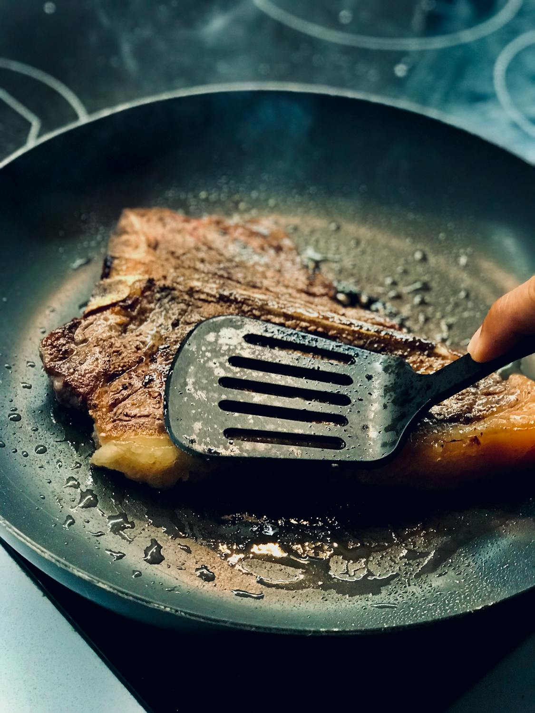
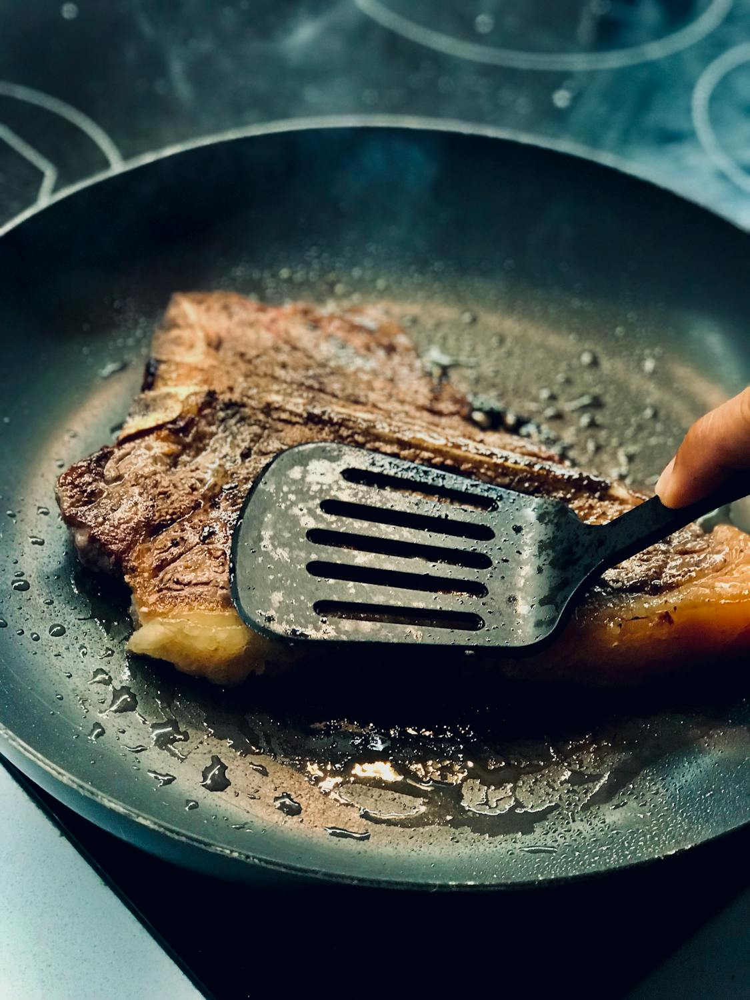
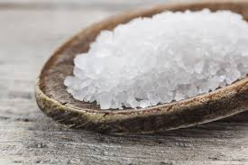
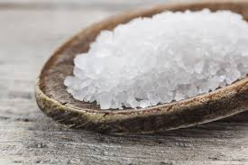
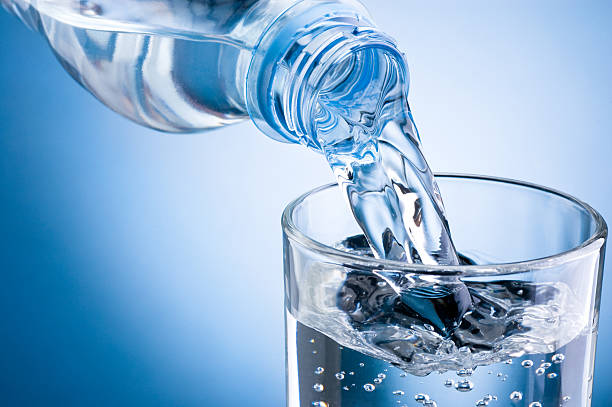
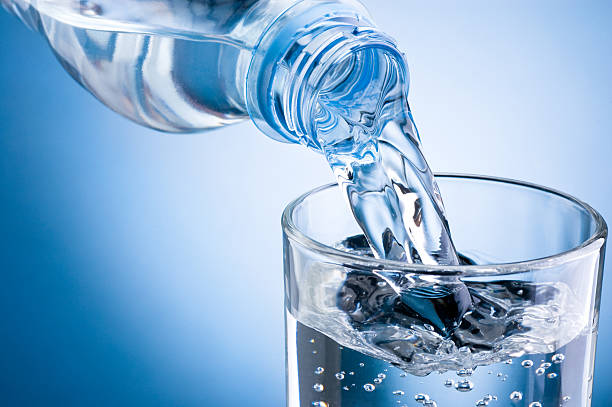

Food is essential for our survival and well-being. It provides us with the necessary nutrients and energy to function properly. There are several classes of food, each serving a unique purpose in our diet.
Carbohydrates are the body's primary source of energy. They are found in foods like bread, rice, pasta, and fruits.
Proteins are essential for growth and repair of tissues. They can be found in meat, fish, eggs, and legumes.
Fats provide a concentrated source of energy and are important for hormone production. They can be found in oils, butter, and nuts.
Vitamins are organic compounds that are crucial for various bodily functions. They can be found in fruits, vegetables, and dairy products.
Minerals are inorganic substances that play a vital role in maintaining health. They can be found in meats, dairy products, and leafy greens.
Carbs are the main source of energy for your body. When you eat food like rice, bread, or pasta, your body breaks it down into glucose, which powers your cells — especially your brain and muscles. Without carbs, you’d feel tired and low-key sluggish all day. There are two main types of carbs: simple carbs (like sugar, soda, and candy) that give quick bursts of energy, and complex carbs (like whole grains, yams, and beans) that provide longer-lasting energy and keep you full longer. Balance is key! Carbs don’t just provide energy; they also help with digestion. Foods high in fiber (a type of complex carb) keep your digestive system on track and help prevent constipation. Fiber also helps manage blood sugar and lowers cholesterol. Win-win! Too much of the wrong type of carbs — especially refined sugars — can lead to weight gain, diabetes, and other health issues. So, it’s better to get your carbs from healthy sources like fruits, veggies, and whole grains. In short, carbs are not the enemy — they’re essential. Just pick the good ones more often. Your body will thank you for giving it clean energy to keep pushing through your day.


Proteins are like your body’s building blocks. They help repair tissues, build muscles, and support immune functions. Whenever your body needs to grow or heal, protein is on the front lines doing the heavy lifting. Proteins are made up of smaller units called amino acids. Some are made by your body, but others (called essential amino acids) must come from food. That’s why eating a variety of protein sources is super important — animal or plant-based. Animal proteins (like meat, fish, and dairy) are complete proteins, meaning they contain all essential amino acids. Plant proteins (like beans, lentils, and nuts) are often incomplete, so it’s good to mix different sources to get a full amino acid profile. Foods rich in protein include meat, eggs, milk, fish, and legumes like beans and lentils. Even nuts and seeds pack a protein punch. Vegetarians and vegans can totally get their protein from plant sources too — they just need to mix it up a bit more. Protein isn’t just about bulking up — it also helps with hormone production, enzyme function, and transporting nutrients around your body. Basically, it’s the multitasker of the nutrient world. If you’re not getting enough protein, you might feel weak, lose muscle mass, or heal more slowly. So, don’t skip it — your body is literally made from the stuff.


Fats and oils often get a bad rep, but truth is, your body needs them. They’re a dense source of energy, help your body absorb fat-soluble vitamins (like A, D, E, and K), and protect your organs like little shock absorbers. There are different types of fats: unsaturated fats (the healthy kind, found in avocados, nuts, and olive oil), saturated fats (found in butter and red meat — okay in moderation), and trans fats (the super unhealthy ones often found in fried foods and processed snacks). Good fats help lower bad cholesterol, support brain function, and reduce inflammation. Omega-3 fatty acids — a type of unsaturated fat — are especially awesome for your heart and brain. Think: fatty fish like salmon or flaxseeds. On the flip side, too much bad fat (especially trans fat) can clog your arteries and lead to heart disease, obesity, and high cholesterol. So, moderation and smart choices matter a lot here. Bottom line: fats aren’t villains. They're part of a balanced diet — just focus on the healthy ones and keep the greasy junk to a minimum.
 

Vitamins are like tiny superheroes that help your body function properly. Even though you need them in small amounts, they play huge roles — from boosting your immune system to helping your body heal wounds or convert food into energy. There are two types of vitamins: fat-soluble (A, D, E, K) which your body stores in fat, and water-soluble (like B-complex and C) which need to be replenished regularly because they leave your body through urine. Each vitamin has its own vibe. Vitamin A helps with vision, Vitamin C boosts immunity, Vitamin D strengthens bones, and Vitamin B complex keeps your energy levels up. You get them from fruits, veggies, eggs, dairy, and sunlight (yes, that counts too for Vitamin D!). Deficiency in any vitamin can lead to health problems. For example, lack of Vitamin C can cause scurvy (yep, like pirates), and not enough Vitamin D can weaken your bones and mess with your mood. So, eat the rainbow — fruits and veggies of all kinds — to make sure you’re getting a mix of all the essential vitamins. Your body will be glowing from the inside out.

Minerals are like vitamins’ underrated cousins. They help with bone health, fluid balance, nerve signals, and making enzymes and hormones. Some key minerals you need include calcium, iron, potassium, zinc, and magnesium. Calcium keeps your bones and teeth strong. Iron helps carry oxygen in your blood. Potassium controls muscle contractions (including your heart!). Zinc boosts your immune system. Magnesium is involved in 300+ body processes — wild, right? You can find minerals in foods like leafy greens, dairy, meat, fish, whole grains, nuts, and even water. A balanced diet gives you all the minerals you need without needing supplements unless prescribed by a doc. Deficiencies can be serious. Not enough iron? You could get anemia and feel super weak. Lack of calcium? Your bones could suffer. That’s why minerals might be small, but they’re mighty. So yep, minerals are essential — don’t sleep on them. They’re the foundation that keeps everything inside you stable and thriving.
 

Water is the MVP. No cap. You can go days without food, but not without water. Your body is made up of like 60% water, and every single cell, tissue, and organ needs it to function right. Water helps regulate your body temperature, keeps your joints cushioned, flushes out toxins, and helps with digestion. It also carries nutrients around your body and makes sure everything flows — literally. Dehydration can mess you up fast — causing headaches, fatigue, dry skin, dizziness, and even confusion. Your body loses water through sweat, pee, and even breathing, so staying hydrated is a full-time job. You can get water from drinks (not just water — herbal teas, smoothies, etc.) and foods like watermelon, cucumbers, and oranges. But yeah, good ol’ H2O is always the best bet. So, sip throughout the day. Keep a water bottle on deck and treat hydration like the non-negotiable boss level it is. Your body — and brain — will operate way better for it.
 
